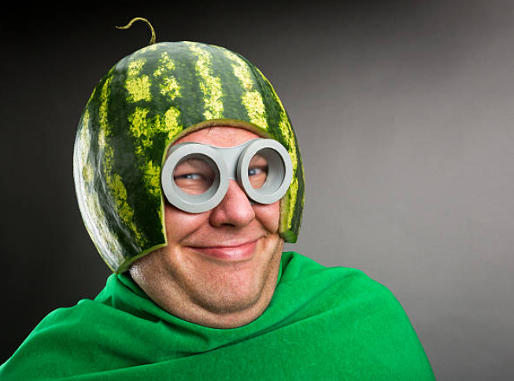

Steve's Incredible Resume

Summary
I am a hard working watermelon pilot with experience flying blimps in the big city fruit parade.
Education
Fruit Flight School
- Bachelor Master Doctorate, Fruit Flight Mechanics - Royal University of Antartica
Work Experience
- Fruit Flight Design Engineer
April 1929 - October 1941
- Carved Pumpkins to suit requirements of flying fruit missions
- Resolved inadequet fruit flight dynamics
- Introduced new quality assurance methods
December 1941 - November 1977
- Piloted blimps in the fruit parade wearing a custom made watermelon head saftey device
- Tossed asparagus stalks at vegetable pilots in the parade
- Ace in the great fruit-vegetable dog fight of July 1956
Skills
- Vegetable Tossing Accuracy★★★★★
- Sucessful fruit aircraft landing★☆☆☆☆
- Fruit Aerdynamics Coaching★★★☆☆
Awards
- Fruit Flight Pilot of the Month - June 1955
Other